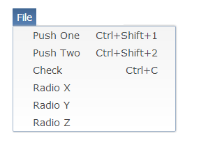

On the MenuItems, all text after a tab character will now be aligned to the right of the item, which is typically used to display an accelerator shortcut. Example:
MenuItem item = new MenuItem( parent, SWT.PUSH ); item.setText( "Push One\tCtrl+Shift+1" ); item.setAccelerator( SWT.CTRL | SWT.SHIFT | '1' );

RAP now uses CSS3 to render rounded borders and gradients in Internet Explorer 10. Previously SVG or VML were used (and still are, on older browser) to achieve these effects. With this update there are considerably less DOM elements created than before.
It's now possible to attach an untyped SWT.Resize event listener to Display. This
listener will be notified when the browser changes its size.
display.addListener( SWT.Resize, new Listener() {
public void handleEvent( Event event ) {
System.out.println( "Browser resized: [ " + event.width + " , " + event.height + " ]" );
}
} );